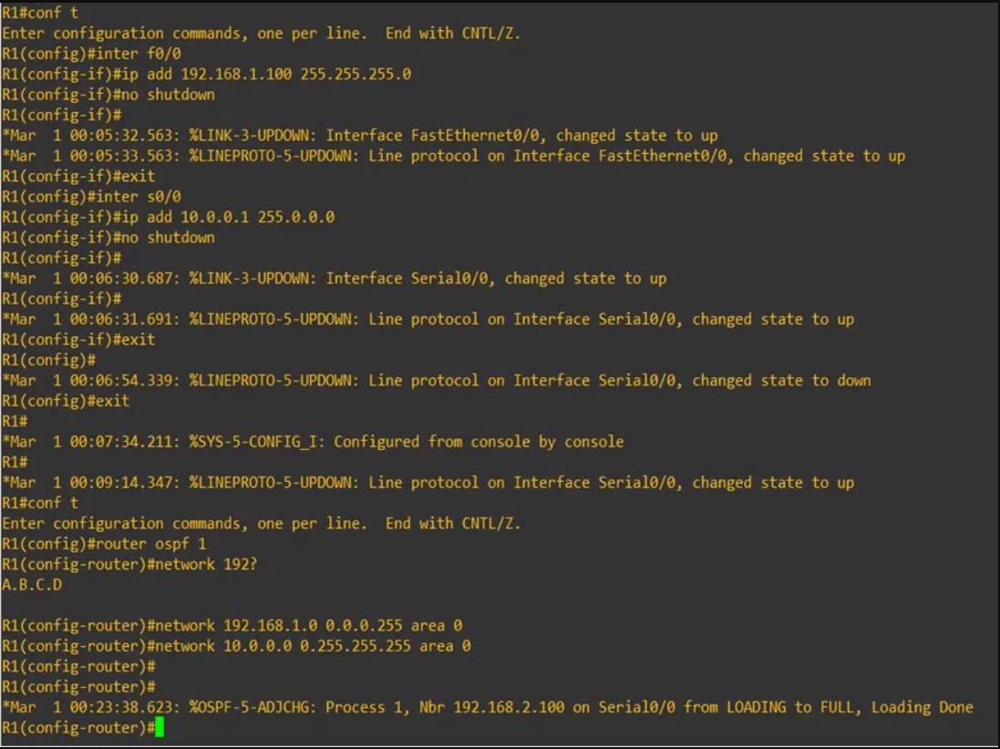
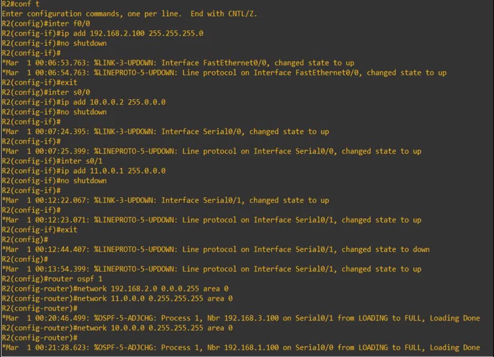
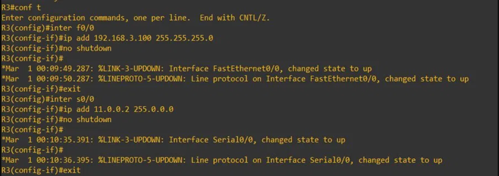
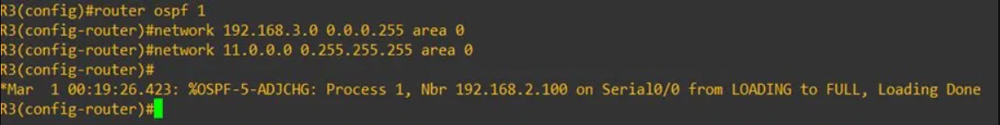
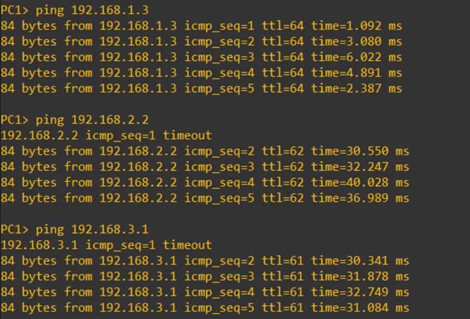
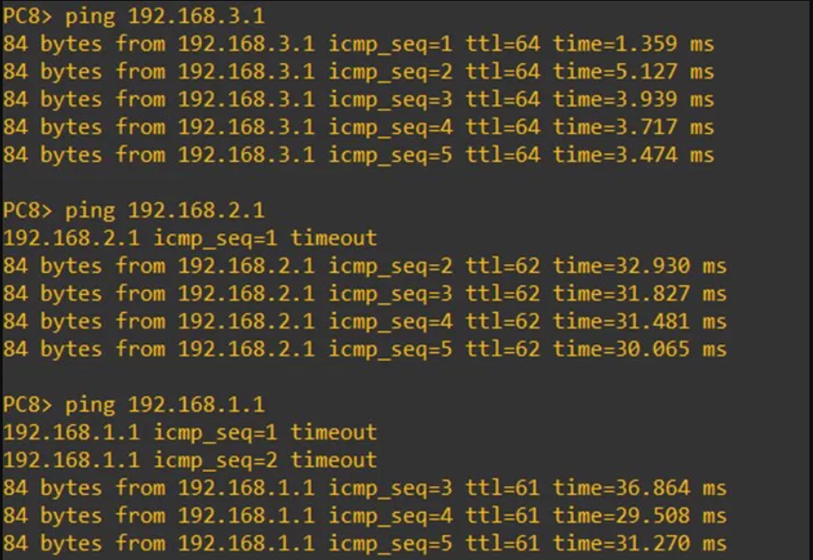

Accueil › Réseau › Routage › OSPF (Dynamique)
OSPF – Routage Dynamique sur GNS3
Objectif
Ce TD introduit le routage dynamique avec OSPF (Open Shortest Path First). Contrairement au routage statique ou par défaut, OSPF permet aux routeurs de découvrir automatiquement les réseaux voisins, d'échanger leurs tables de routage et de recalculer les meilleurs chemins en temps réel. La topologie reste identique aux TDs précédents, mais la configuration est radicalement simplifiée.
📖 Concepts clés OSPF
- Protocole à état de lien (Link-State) : chaque routeur connaît la topologie complète du réseau
- Algorithme SPF (Dijkstra) : calcule le chemin le plus court vers chaque destination
- Area 0 (Backbone) : zone unique utilisée ici — toute l'infrastructure dans une seule zone
- Wildcard mask : inverse du masque de sous-réseau (
0.0.0.255pour un /24) - Adjacence : les routeurs voisins OSPF établissent une relation de voisinage (FULL)
⚡ OSPF vs Routage Statique/Défaut
Avec les TDs précédents, chaque routeur nécessitait des routes manuelles. Avec OSPF, une seule configuration par routeur suffit :
! Avant (statique) : routes manuelles par réseau ip route 192.168.2.0 255.255.255.0 10.0.0.2 ip route 192.168.3.0 255.255.255.0 10.0.0.2 ! Avec OSPF : déclaration des réseaux directement connectés router ospf 1 network 192.168.1.0 0.0.0.255 area 0 network 10.0.0.0 0.255.255.255 area 0 ! OSPF se charge du reste automatiquement ✅
Topologie du réseau

Étapes de configuration
1Configuration des adresses IP des VPCS
Même adressage que les TDs précédents : 3 réseaux /24, passerelles sur les routeurs.


2Configuration de R1 – Interfaces + OSPF

%OSPF-5-ADJCHG: Nbr 192.168.2.100 → FULL confirme l'adjacence avec R2Ce message confirme que R1 et R2 ont établi une adjacence OSPF complète — les tables de routage sont synchronisées.
3Configuration de R2 – Routeur central OSPF

4Configuration de R3 – Interfaces + OSPF


5Tests de connectivité
Pings depuis PC1 (réseau R1) et PC8 (réseau R3) vers les réseaux distants :


✅ Ce que j'ai appris
- Comprendre le fonctionnement d'OSPF : échange LSA, base LSDB, calcul SPF (Dijkstra)
- Configurer OSPF avec
router ospf 1et déclarer les réseaux avec le wildcard mask - Interpréter les messages d'adjacence
%OSPF-5-ADJCHG ... FULL - Distinguer OSPF (single-area) d'une configuration multi-area plus avancée
- Apprécier la différence de scalabilité : OSPF s'adapte automatiquement sans reconfiguration manuelle